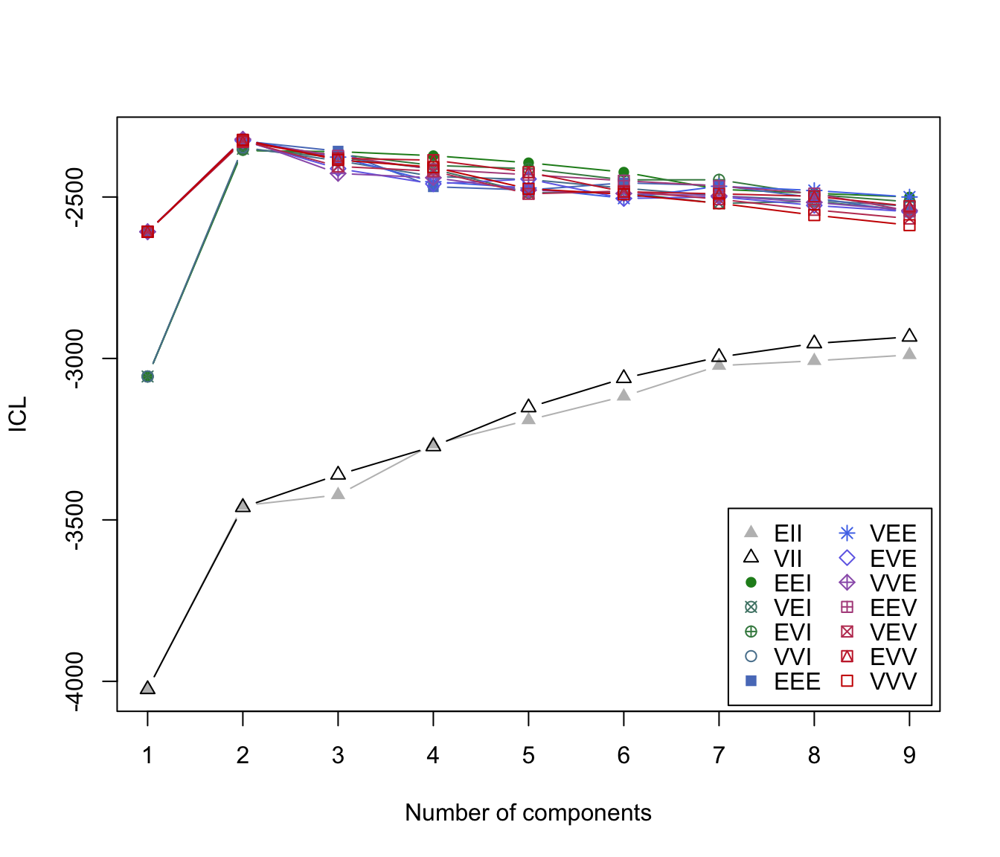

ICL Criterion for Model-Based Clustering
mclustICL.RdICL (Integrated Complete-data Likelihood) for parameterized Gaussian mixture models fitted by EM algorithm initialized by model-based hierarchical clustering.
Arguments
- data
A numeric vector, matrix, or data frame of observations. Categorical variables are not allowed. If a matrix or data frame, rows correspond to observations and columns correspond to variables.
- G
An integer vector specifying the numbers of mixture components (clusters) for which the criteria should be calculated. The default is
G = 1:9.- modelNames
A vector of character strings indicating the models to be fitted in the EM phase of clustering. The help file for
mclustModelNamesdescribes the available models. The default is:c("E", "V")for univariate data
mclust.options("emModelNames")for multivariate data (n > d)
c("EII", "VII", "EEI", "EVI", "VEI", "VVI")the spherical and diagonal models for multivariate data (n <= d)
- initialization
A list containing zero or more of the following components:
hcPairsA matrix of merge pairs for hierarchical clustering such as produced by function
hc. For multivariate data, the default is to compute a hierarchical clustering tree by applying functionhcwithmodelName = "VVV"to the data or a subset as indicated by thesubsetargument. The hierarchical clustering results are to start EM. For univariate data, the default is to use quantiles to start EM.subsetA logical or numeric vector specifying a subset of the data to be used in the initial hierarchical clustering phase.
- x
An object of class
'mclustICL'. If supplied,mclustICLwill use the settings inxto produce another object of class'mclustICL', but withGandmodelNamesas specified in the arguments. Models that have already been computed inxare not recomputed. All arguments tomclustICLexceptdata,GandmodelNameare ignored and their values are set as specified in the attributes ofx. Defaults forGandmodelNamesare taken fromx.- ...
Futher arguments used in the call to
Mclust. See alsomclustBIC.- object
An integer vector specifying the numbers of mixture components (clusters) for which the criteria should be calculated. The default is
G = 1:9.
Value
Returns an object of class 'mclustICL' containing the the ICL criterion
for the specified mixture models and numbers of clusters.
The corresponding print method shows the matrix of values and the top models according to the ICL criterion. The summary method shows only the top models.
References
Biernacki, C., Celeux, G., Govaert, G. (2000). Assessing a mixture model for clustering with the integrated completed likelihood. IEEE Trans. Pattern Analysis and Machine Intelligence, 22 (7), 719-725.
Scrucca L., Fop M., Murphy T. B. and Raftery A. E. (2016) mclust 5: clustering, classification and density estimation using Gaussian finite mixture models, The R Journal, 8/1, pp. 289-317.
See also
Examples
data(faithful)
faithful.ICL <- mclustICL(faithful)
faithful.ICL
#> Integrated Complete-data Likelihood (ICL) criterion:
#> EII VII EEI VEI EVI VVI EEE
#> 1 -4024.721 -4024.721 -3055.835 -3055.835 -3055.835 -3055.835 -2607.623
#> 2 -3455.814 -3460.903 -2356.273 -2350.728 -2353.254 -2346.161 -2326.710
#> 3 -3422.758 -3360.264 -2359.458 -2377.306 -2367.537 -2387.744 -2357.824
#> 4 -3265.796 -3272.457 -2371.996 -2413.391 -2402.189 -2436.318 -2468.261
#> 5 -3190.702 -3151.887 -2394.022 -2486.702 -2412.390 -2445.754 -2478.220
#> 6 -3117.441 -3061.335 -2423.024 -2486.795 -2446.878 -2472.624 -2456.239
#> 7 -3022.312 -2995.759 -2476.203 -2519.776 -2446.706 -2496.750 -2464.343
#> 8 -3007.364 -2953.728 -2488.504 -2513.529 -2492.319 -2509.675 -2502.177
#> 9 -2989.092 -2933.144 -2499.876 -2540.432 -2515.042 -2528.602 -2547.111
#> VEE EVE VVE EEV VEV EVV VVV
#> 1 -2607.623 -2607.623 -2607.623 -2607.623 -2607.623 -2607.623 -2607.623
#> 2 -2323.396 -2325.768 -2320.763 -2330.000 -2325.727 -2328.163 -2322.697
#> 3 -2376.466 -2412.034 -2427.038 -2372.365 -2405.333 -2380.322 -2385.244
#> 4 -2452.689 -2459.430 -2440.279 -2414.165 -2419.889 -2385.843 -2407.555
#> 5 -2472.038 -2444.255 -2478.628 -2431.096 -2490.222 -2423.174 -2474.493
#> 6 -2503.936 -2504.770 -2489.104 -2449.583 -2481.393 -2483.772 -2491.597
#> 7 -2466.783 -2499.326 -2496.300 -2465.693 -2506.829 -2490.131 -2519.470
#> 8 -2479.790 -2526.028 -2516.572 -2489.431 -2539.783 -2497.812 -2556.115
#> 9 -2499.921 -2545.663 -2541.675 -2542.877 -2566.735 -2528.600 -2587.235
#>
#> Top 3 models based on the ICL criterion:
#> VVE,2 VVV,2 VEE,2
#> -2320.763 -2322.697 -2323.396
summary(faithful.ICL)
#> Best ICL values:
#> VVE,2 VVV,2 VEE,2
#> ICL -2320.763 -2322.697467 -2323.39551
#> ICL diff 0.000 -1.934645 -2.63269
plot(faithful.ICL)

# \donttest{
# compare with
faithful.BIC <- mclustBIC(faithful)
faithful.BIC
#> Bayesian Information Criterion (BIC):
#> EII VII EEI VEI EVI VVI EEE
#> 1 -4024.721 -4024.721 -3055.835 -3055.835 -3055.835 -3055.835 -2607.623
#> 2 -3452.998 -3458.305 -2354.601 -2350.607 -2352.618 -2346.065 -2325.220
#> 3 -3377.701 -3336.598 -2323.014 -2332.687 -2332.205 -2342.366 -2314.316
#> 4 -3230.264 -3242.826 -2323.673 -2331.284 -2334.749 -2343.486 -2331.223
#> 5 -3149.394 -3129.080 -2327.059 -2350.230 -2347.564 -2351.017 -2360.659
#> 6 -3081.414 -3038.171 -2338.205 -2360.578 -2357.660 -2373.469 -2347.352
#> 7 -2990.367 -2973.374 -2356.454 -2368.513 -2372.851 -2394.696 -2369.330
#> 8 -2978.100 -2935.082 -2364.140 -2384.740 -2389.064 -2413.705 -2376.104
#> 9 -2953.359 -2919.415 -2372.790 -2398.223 -2407.224 -2432.708 -2389.609
#> VEE EVE VVE EEV VEV EVV VVV
#> 1 -2607.623 -2607.623 -2607.623 -2607.623 -2607.623 -2607.623 -2607.623
#> 2 -2322.972 -2324.273 -2320.433 -2329.115 -2325.416 -2327.598 -2322.192
#> 3 -2322.103 -2342.319 -2336.271 -2325.322 -2329.648 -2339.983 -2349.696
#> 4 -2340.173 -2361.821 -2362.487 -2351.523 -2361.084 -2344.686 -2351.493
#> 5 -2347.337 -2351.828 -2368.937 -2356.856 -2368.101 -2364.900 -2379.388
#> 6 -2372.287 -2366.482 -2386.537 -2366.087 -2386.323 -2384.117 -2387.016
#> 7 -2371.175 -2379.810 -2402.220 -2379.071 -2401.270 -2398.703 -2412.440
#> 8 -2390.391 -2403.934 -2425.956 -2392.988 -2425.426 -2414.962 -2442.018
#> 9 -2406.732 -2414.089 -2448.208 -2407.500 -2446.726 -2438.876 -2460.398
#>
#> Top 3 models based on the BIC criterion:
#> EEE,3 VVE,2 VEE,3
#> -2314.316 -2320.433 -2322.103
plot(faithful.BIC)
 # }
# }